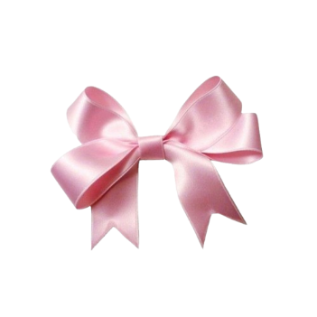

We are a Junior Achievement company with a goal of raising awareness for voices not heard. Through our handcrafted ribbon flowers, we support causes that matter and bring attention to important issues like mental health, cancer, and more. Every flower tells a story, and together, we can make a difference.

Fighting Florists is a team of passionate students aiming to raise awareness for causes that often go unnoticed. Each ribbon flower we create represents hope, care, and the importance of speaking up. We believe that even small gestures, like a flower, can inspire big change in our communities.
Our mission is simple: educate, inspire, and support. We create ribbon flowers for causes such as mental health, cancer, autism, and more, while giving our team members a chance to share educational blogs about each topic. Together, we spread awareness, recognition, and hope—one flower at a time.